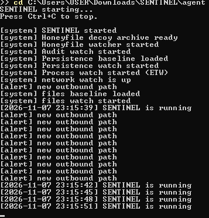
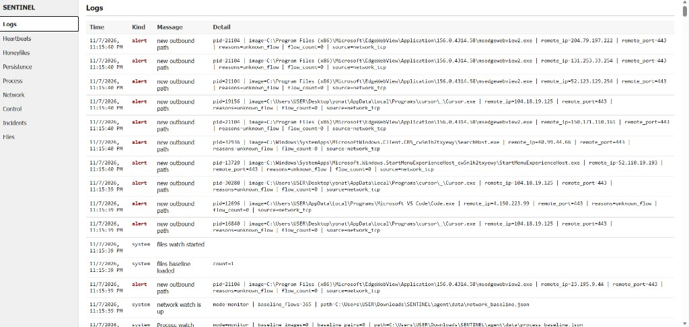
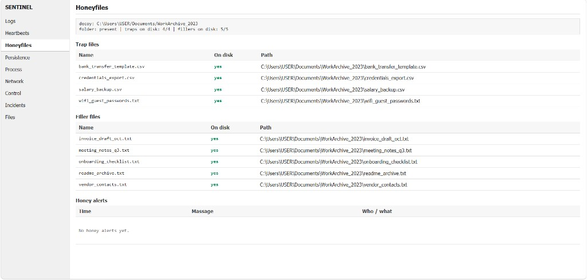
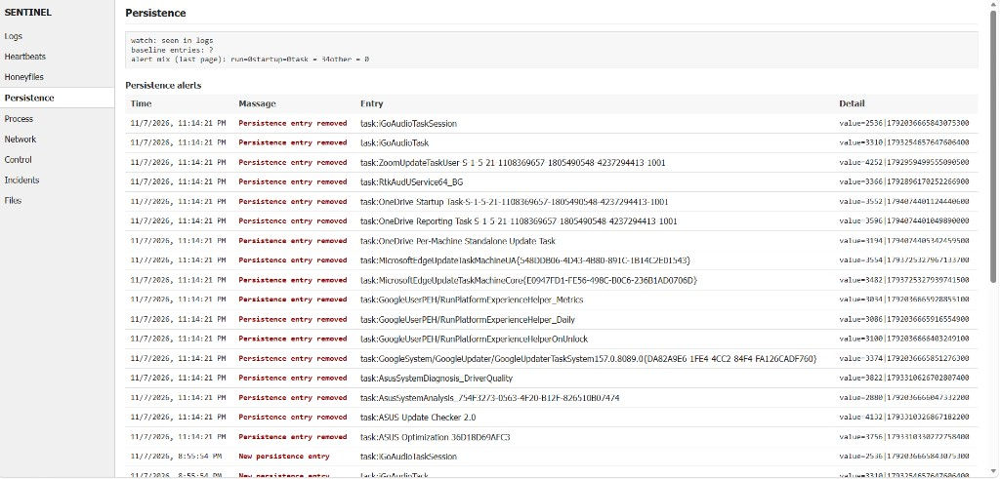
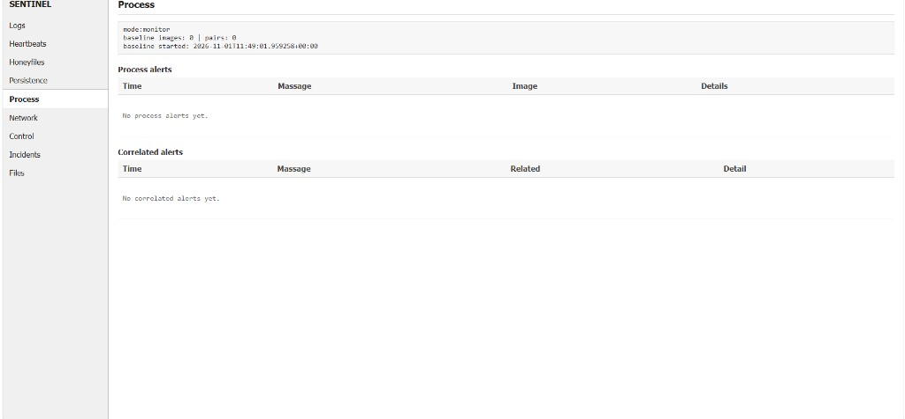
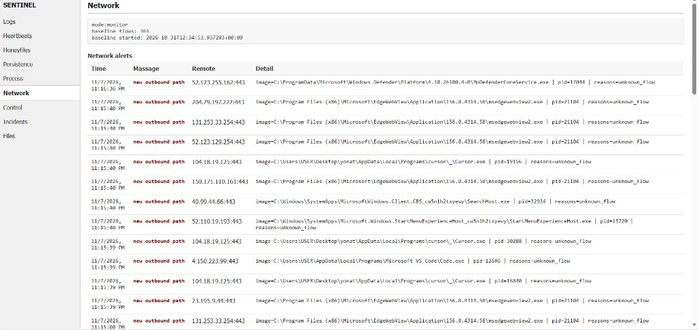
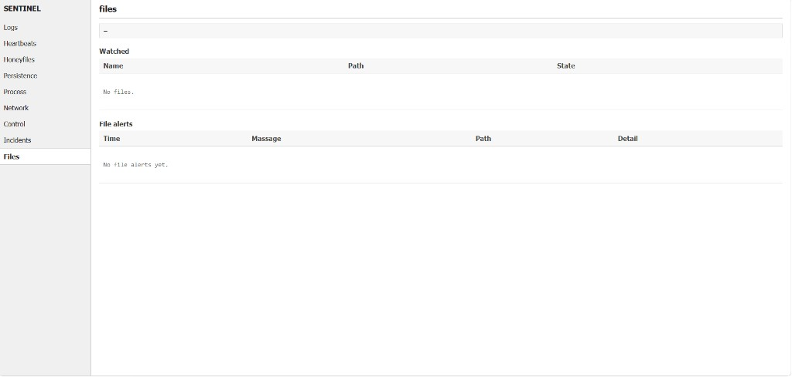
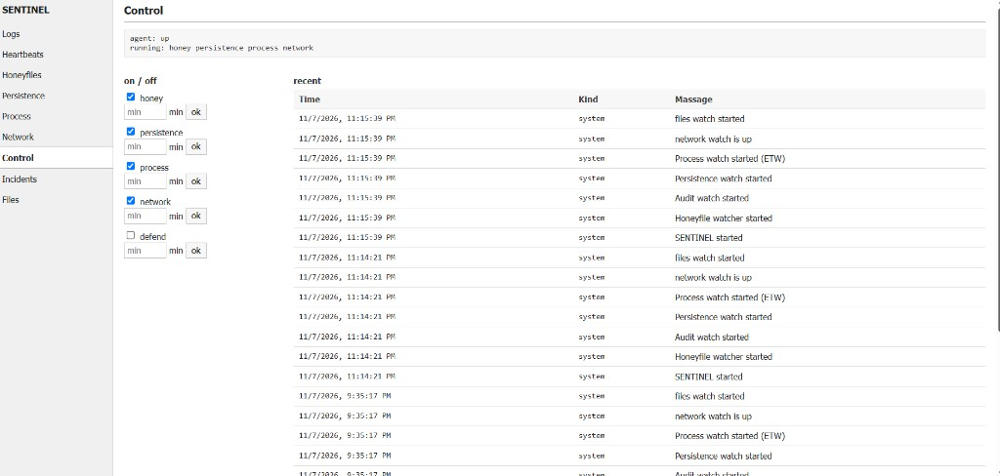

quick walkthrough of the local windows host monitor. agent + dashboard on localhost. these are real screens from a running build.
python main.py. watchers start, then it sits here

everything lands here. alerts show up in red.

trap files + fillers on disk

run / startup / tasks changes.

process watch + correlated alerts (empty here, thats fine).

outbound paths it hasnt seen before.

watched files page. list comes from files.json.

turn watchers on/off. defend stays off unless you want it.
